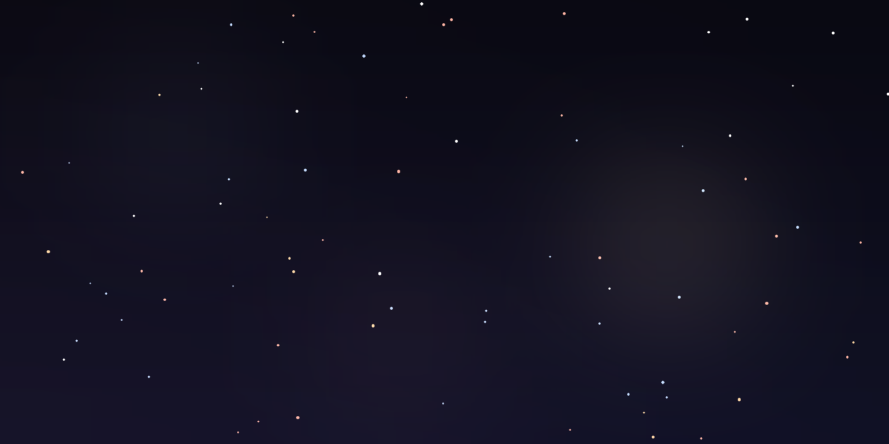
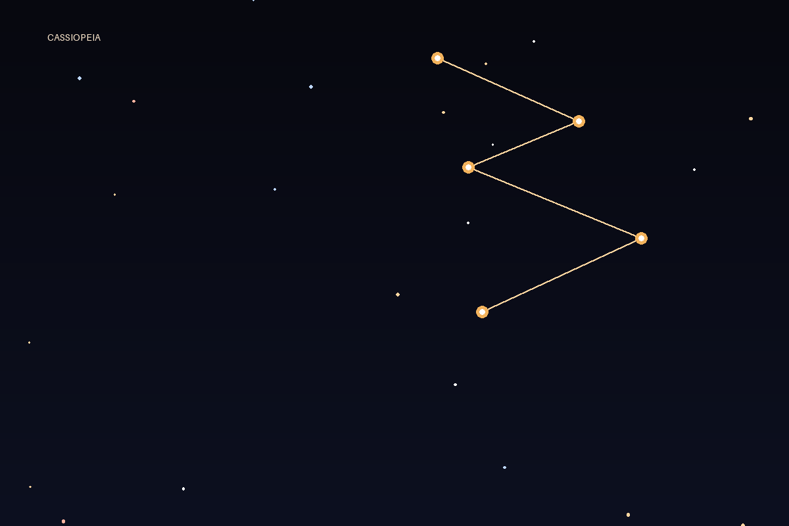
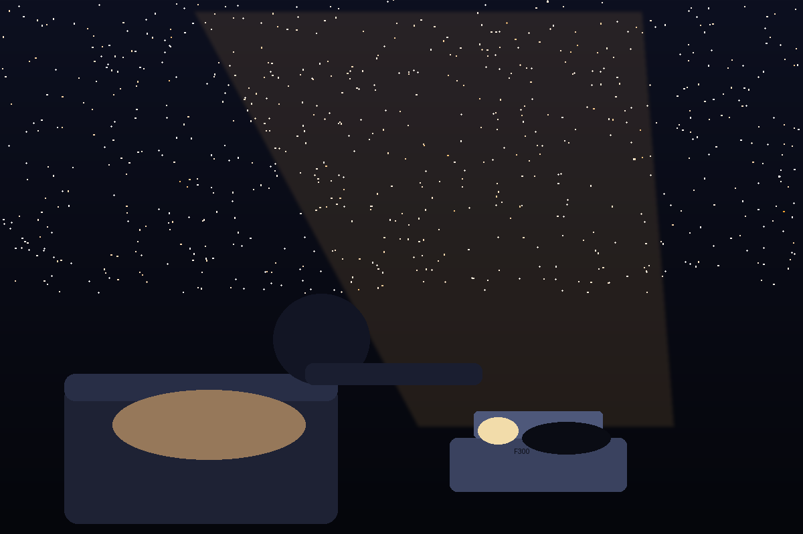
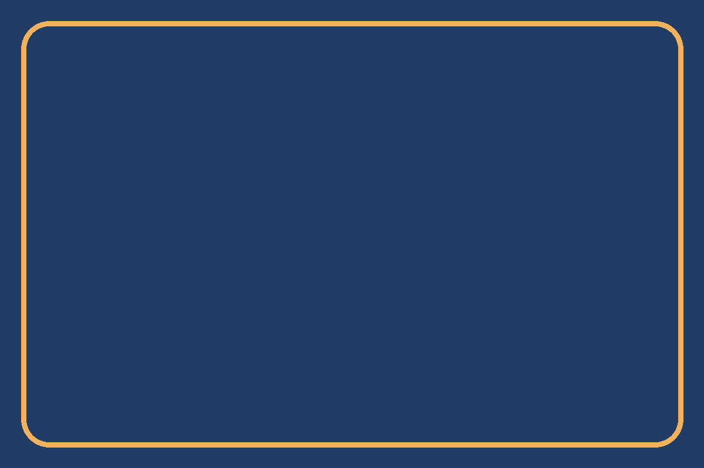

A bedtime star projector and astronomy sleep companion for children — built on a HY300 projector. Evenings bring guided constellation tours with audio lessons; at midnight, the sky embarks on a silent 3D faster-than-light journey to the featured constellation's farthest star, and drifts home by dawn.
Features
Guided constellation toursEvening journeys through the night sky with narrated audio lessons for young stargazers.
The midnight journeyA silent 3D faster-than-light flight across the sky to the featured constellation's farthest star — home again by dawn.
The Milky Way & planetsTextured globes of the planets, the sweep of the Milky Way, and passing satellites overhead.
Parent control PWASchedule bedtime wind-down, pick lessons, and monitor the night from any device on your network.

A night with Astrarium
EveningGuided constellation tour with audio lessons, then the sky settles.
MidnightSilent 3D FTL voyage to the featured constellation's farthest star.
DawnThe journey returns home as the room brightens for morning.

Each night the featured constellation is traced in amber — this month, Cassiopeia.
Align your room
Open http://<player-ip>:8080/align on your phone to photograph the ceiling and calibrate windows into the starfield.
The F300 experience

Guided by the F300 — the evening tour, then the silent journey to the night's farthest star.

Window mode — a porthole over Earth, calibrated to your own ceiling.